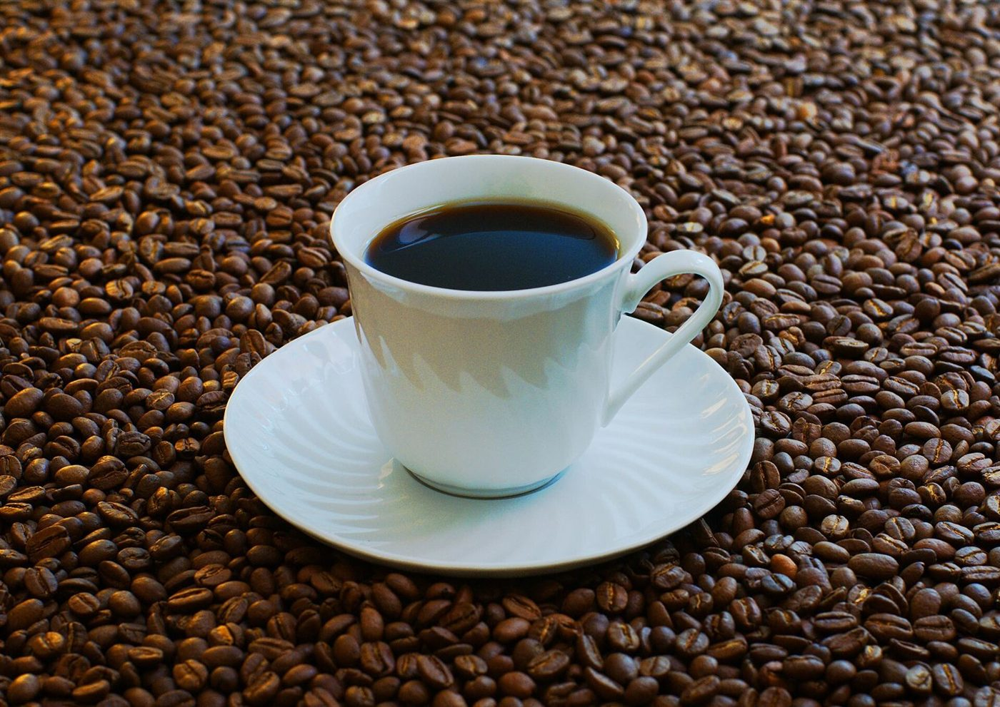

部位 4 / 6 ・ パイピング
口コミ(イメージ例)
以下は制作側が創作した声です。実在のお客様の投稿ではありません。
制作側の連想で、お店の理念・由来とは無関係です。枕の断面にある部位を、ページの見立てにしています。実際の製品の仕様を示すものではありません。
枕の断面図(模式)。1〜5は各ページ、6は全ページ下部の出典欄です。
4 ・ パイピング
想像した声
制作側の創作で、実在のお客様の投稿ではありません。
イメージ例営業時間などが分かったら、行ってみたいです。それまでは、Instagramの更新を楽しみにしています。
イメージ例Instagramをのぞいてみたいと思います。投稿が増えたら、ゆっくり眺めたいです。
イメージ例お店の情報がそろったら、足を運んでみたいです。写真の更新を待っています。


写真はパンとコーヒーのイメージです。お店のものではなく、提供している商品を示すものでもありません。


写真はイメージです。お店のものではありません。